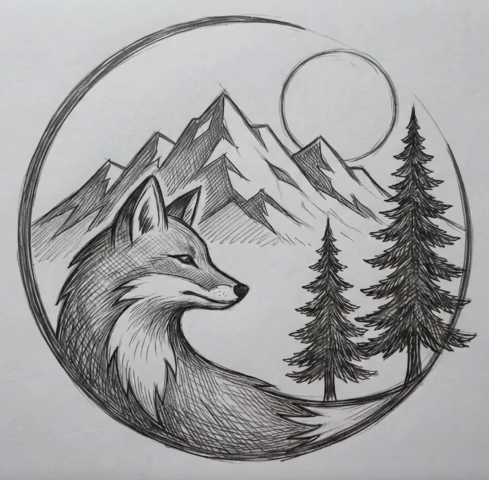

Make anything.
Web projects, creative experiments, technical ideas, and independent ventures.
Who we are
Fox & Timber grew out of a mind that never stopped inventing businesses, products, identities, experiences, and better ways to make things work.
For years, the ideas arrived faster than they could become real. The turning point was realizing the ideas themselves were not a distraction from the work. They were the work.

The roots
The company first took shape around technology, independent projects, and the name 13Labs. As the work expanded into design, branding, outdoor storytelling, publishing, websites, apparel, maps, and product concepts, the old identity became too narrow.
Fox & Timber became the better container. The fox represents curiosity, intelligence, observation, and adaptation. Timber grounds the company in craftsmanship, natural materials, mountain forests, and Durango.
The evolution
Web projects, creative experiments, technical ideas, and independent ventures.
The most consistent skill was turning an undeveloped thought into a complete, believable brand world.
Fox & Timber became a creative brand consultancy rather than another general design studio.
Now the same imagination, strategy, and visual thinking are applied to client ideas.
Our belief
A strong brand lets someone understand an idea before the business has a storefront, the product has a package, or the first campaign has launched.
Our job is to make that future visible.